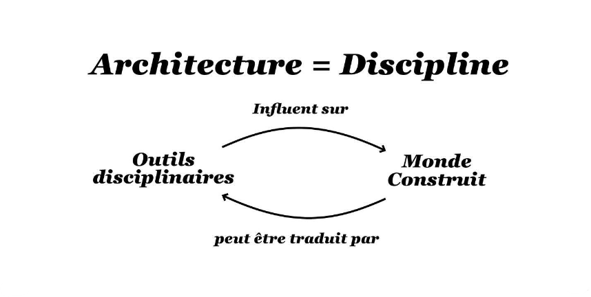
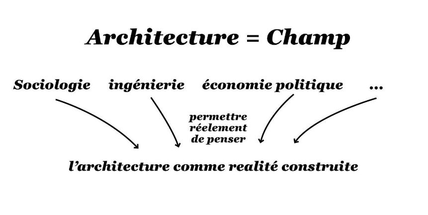
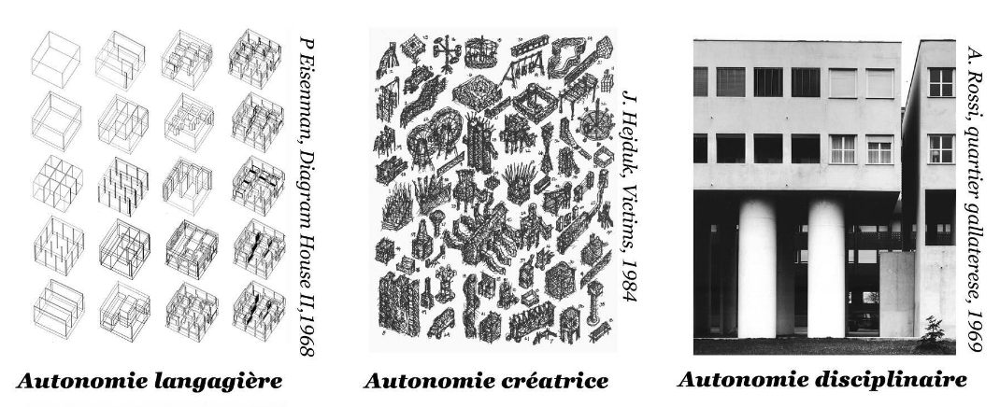

Autonomie vs Hétéronomie
Louis Fiolleau
Club ASAP 03
juillet 2024
Temps de lecture : 6 min
Afin d’introduire ce troisième Club ASAP, nous proposons de démontrer en quoi la paire autonomie/hétéronomie occupe une place centrale vis-à-vis de la question de la théorie architecturale. On avancera alors que chaque thèse ou approche théorique qui vise à définir ce qu’est l’Architecture et ce qu’elle doit faire, s’agence, consciemment ou non, au sein d’une tension permanente entre ces deux pôles.
Avant toute chose, il semble important d’écarter un point qui pourrait bloquer la réflexion autour du sujet : personne, ici, ne remettra en cause le constat que faire advenir un bâtiment, c’est dépendre d’autre chose que des simples désirs de l’architecte. Il est évident que le réel de la construction n’est pas seulement déterminé par des principes typologiques, des choix ornementaux ou des jeux morphologiques.
Denis Scott Brown appuie notamment cet aspect lorsqu’elle choisit d’exprimer sa frustration quant à l’interdépendance au client - ce qui annihilerait justement la possibilité d’autonomie du créateur :
« J’ai toujours dit, pourquoi on ne fait que des petites maisons quand on a le talent pour faire plus ? (…) Bob (Robert Venturi) a une capacité qu’il ne peut pas utiliser parce qu’il n’en a pas l’opportunité. »
Autrement dit, la question de l’autonomie ou non se jouerait avant tout sur le papier et sur les principes conceptuels convoqués pour faire de l’Architecture.
De même, concevoir de manière autonomiste n’est donc pas synonyme d’inventer de nouveaux modèles de ZAD ou de villages communautaires auto-suffisants – ces derniers sont d’ailleurs davantage liés à aux architectes hétéronomistes comme on le verra plus loin. Aussi, si on distingue, conception autonomiste et hétéronomiste c’est bien, parce que chacun de ces deux pôles recouvre une vision différente voir contradictoire de ce que doivent être et faire les architectes en rapport à la société.
De même, concevoir de manière autonomiste n’est donc pas synonyme d’inventer de nouveaux modèles de ZAD ou de villages communautaires auto-suffisants – ces derniers sont d’ailleurs davantage liés à aux architectes hétéronomistes comme on le verra plus loin. Aussi, si on distingue, conception autonomiste et hétéronomiste c’est bien, parce que chacun de ces deux pôles recouvre une vision différente voir contradictoire de ce que doivent être et faire les architectes en rapport à la société.
Ces deux approches portent, en effet, une revendication respective de ce qu’est, avant tout, l’Architecture – on pourrait même dire de ce qui en fait son essence :
- Aller dans le sens d’une vision autonomiste de l’Architecture, c’est admettre que l’Architecte a en main des outils propres et spécifiques qui évoluent selon des règles internes. Autrement dit, cela revient à considérer l’Architecture comme une discipline. IMAGE : PLAN QUINQUENAL LE CORBUSIER Une discipline qui permettrait alors de traiter les sujets divers du réel par ses principes propres : le Plan comme moyen de planifier des politiques agricoles par exemple.

- L’approche hétéronomiste, de l’autre côté, est un moyen de considérer que l’Architecture n’est pas une discipline indépendante, mais un domaine sous l’influence de forces externes multiples. L’architecture est alors davantage considérée comme un champ d’étude interdisciplinaire où les sachants - économistes, sociologues, ingénieurs… - et les profanes – usagers, commanditaires… - peuvent intervenir sur la conception et la gouvernance des espaces. Il s’agit s’assumer la contingence de l’acte de bâtir.

Autonomie et hétéronomie, discipline et champ, construisent alors un rapport dialectique, une lutte qui met au centre l’intérêt du champ des architectes et sa place dans les structures productives et idéologiques du monde. On remarquera notamment que les théories autonomistes du tournant post-moderne ont été revendiquées en parallèle du recul du rôle avant-gardiste de l’Architecture et d’une crise de la profession. L’échec des théories rationalistes des modernes a généré, chez les architectes des années 70, un intérêt croissant pour le langage architectural et pour un formalisme décomplexé - Eisenman en figure de proue de cette sorte de tentative d’autonomie totale de la conception. D’autres encore comme John Hedjuck, développe, eux, l’autonomie du sujet créateur théorisant l’intuition personnelle comme création formelle. C’est aussi à cette période que l’autonomie disciplinaire de la Tendenza se développe, Aldo Rossi considérant que c’est, par la typologie et les attributs culturels, que l’Architecture devra se confronter aux questions sociales et politiques de l’époque…

Même à l’intérieur du camp des autonomistes, les théories divergent donc, selon ce qu’on choisit de définir comme l’ordre interne de la discipline : l’Architecture est un langage, l’Architecture est son auteur ou l’Architecture est un ensemble typologique permanent…
Inversement, cette prolifération de tentatives autonomistes a aussi boosté un bon nombre de critiques du camp opposé, celui des réalistes contre celui des formalistes. Les écrits du théoricien marxiste italien, Manfredo Mafuri sont éloquents à ce sujet. Selon lui, toute tentative autonomiste des pseudos avant-gardes post-modernes est vaine, nostalgique voire pathétique. L’Architecture et ses outils sont devenus obsolètes face aux enjeux du capitalisme et de la métropole moderne.
Les principes disciplinaires ne sont plus considérés comme efficients. Ce qui donne lieu à une nouvelle qu’on retrouve dans ces paroles de Cedric Price :« la meilleure solution à un problème d’Architecture n’est pas forcément un bâtiment ». La logique voudrait donc que l’architecte abandonne son rôle d’intellectuel pour se confiner à un rôle plus proche du technicien des formes construites. La fatalité de ce déterminisme devient donc le moteur des différents courants hétéronomistes.
Certains proposent alors des contre-modèles plus collectivistes : L’architecte comme citoyen s’oriente par exemple vers les expériences de conception architecturale horizontale des années 70-80 – on pense à ‘‘the community architecture movement’’ au Royaume-Uni. D’autres, à l’inverse plus ‘‘opportunistes’’, veulent inscrire l’architecte comme ‘‘l’esprit de synthèse’’ capable d’intégrer pleinement la contingence du monde capitaliste de la fin du millénaire, de récolter les datas programmatiques multiples du projet et de les traiter efficacement par le nouvel outil diagrammatique.
Cependant, tout ce dont on vient de parler commence à dater quelque peu. L’euphorie technologique des années 90 qui a permis l’émergence des hétéronomistes des datas, semble quelque peu dépassé. Où se situent aujourd’hui, ces tendances ? Peut-on mettre en avant un autre moment caractéristique de la lutte du couple autonomie/hétéronomie qui nous serait plus contemporain ?
La crise de 2008 pourrait apparaître comme ce nouveau marqueur. Les politiques d’austérité et l’appauvrissement anticipé des ressources matérielles ont, de fait, forcé une mise à jour logiciel des théories autonomistes/formalistes comme des thèses hétéronomistes/réalistes. D’un côté, on pourrait, aujourd’hui, voir dans les néo-rationalistes, les autonomistes du début du millénaire. L’économie des moyens est abordée comme une opportunité de réduire l’architecture à son essence disciplinaire. Comme la Tendenza avant eux, les concepteurs d’abris souverains et de structures capables se destinent à la création des nouvelles formes en passe d’accueillir l’action humaine dans sa diversité contemporaine.
En miroir, c’est l’architecture participative qui semble avoir poursuivi la lancée des expérimentations citoyennes du siècle dernier. Suivant notamment les exemples manifeste du Sud – Alejandro Aravena en tête - des pratiques collectives se sont développés ponctuellement à l’échelle de friches, villages ou quartiers autour des questions de participation active et gouvernance des espaces. Cependant, aujourd’hui, cette tendance hétéronomiste s’est incontestablement institutionnalisée, perdant de fait son aspect conflictuel. Les pouvoirs publics et les promoteurs ont en effet trouvé dans les écoquartiers, les consultations citoyennes, les ateliers de conception de quartier et l’écoconstruction, une occasion de labelliser l’intégration des usagers dans le champ architectural.
Néanmoins, si les approches participatives ont bien été récupérées à des fins marchandes, on peut largement en dire autant pour les structures épurées des architectes-formalistes. Les ‘‘boîtes sans contenus’’ de Office remportent un franc succès chez nombre de commanditaires et les fans du style graphiques de Dogma pullulent dans les écoles d’architectures et les agences. La preuve de cette normalisation étant la désignation de Pier Vittorio Aureli, dirigeant de Dogma, en tant que co-président de l’EPFL. Est-on donc témoin d’une prise de pouvoir des thèses néo-rationalistes sur le monde néo-libéral de la construction ou faisons-nous face à une énième neutralisation des aspects radicaux de l’avant-garde ? Le matérialiste averti restera, pour sa part, stoïque.
Pour Can Onaner, architecte-chercheur s’intéressant au sujet, les deux approches évoquées gagneraient à se radicaliser davantage vers leur essence. Les architectes-citoyens doivent se transformer en véritables activistes et investir les cas de réappropriation conflictuelle du théâtre urbain, généraliser les actions de Occupy, appuyer, en tant qu’intervenant spécialisé, autres guérillas et squats urbains.
De l’autre côté, les néo-rationalistes devront se concentrer sur ce qui fait qu’une forme est en capacité ou non d’entraîner l’émancipation du sujet. Pour cela, il faudra peut-être retrouver « une froideur » dans les formes capables pour empêcher la récupération par le marché. Ce double dépassement revient de fait à suivre la consigne de Mallarmé :
« il n'existe d'ouvert à la recherche mentale que deux voies, en tout, où bifurque notre besoin, à savoir, l'esthétique d'une part et aussi l'économie politique »
Reste à chacun de choisir dans quel sens lutter : camp autonomiste ou hétéronomiste ?
L'ensemble des articles issus du club asap 03 sont disponibles ci-dessous:
| # | Titre | Auteur | |
|---|---|---|---|
| 300 | Luttes pour et contre l'architecture | Louis Fiolleau | Club #03 |
| 301 | Une discussion | Salma Khobalatte & Benjamin Sauviac |
Club #03 |
| 302 | Economie de l'offre et de la demande | Hugo Forté | Club #03 |
| 303 | Les écoles, fabriques d'hétéronomistes? | Clarisse Protat | Club #03 |